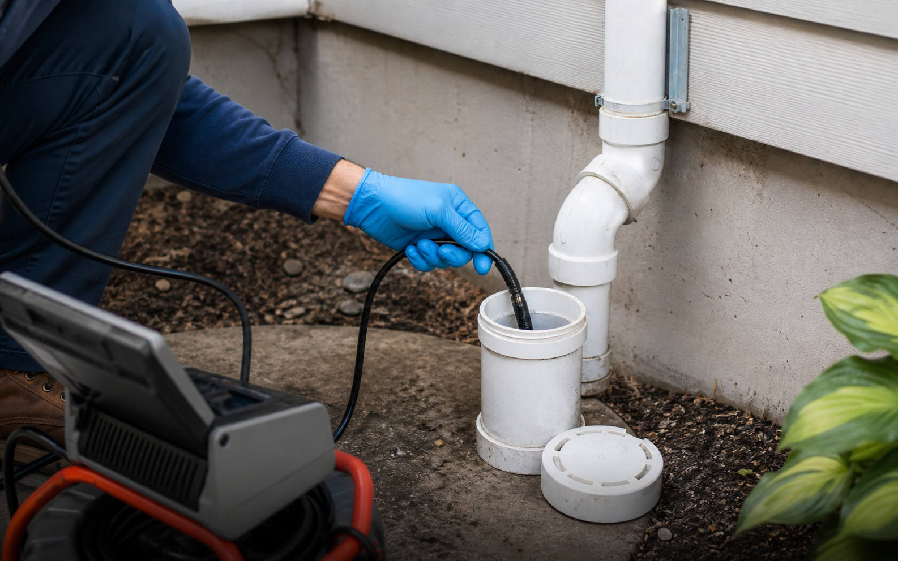

Water sits in the basin, the shower drains slowly, a floor drain smells, or the same clog keeps coming back.
Which drain is affected, when it started, whether other fixtures act strange, and whether anything has already been tried.
Provider availability, the proposed clearing method, what is included, and when a camera inspection makes sense.
Why the same symptom can mean different things
A slow bathroom sink often feels like a small inconvenience until it returns a week later. A kitchen drain may behave normally for days, then suddenly fill with cloudy water after cooking or running the dishwasher. A basement floor drain can seem fine until laundry day. Those patterns matter because they help separate a one-fixture nuisance from a larger drainage concern.
During a provider conversation, customers can ask whether the issue appears local to one fixture or possibly connected to a larger line. That simple distinction changes the expectation around tools, access, timing, and whether additional inspection is worth discussing.


Signals worth taking seriously
Not every slow drain is urgent. But when several fixtures misbehave together, the request should be framed with more care. Water rising in a tub after a toilet flush, floor drain overflow, strong sewer odor, or a clog that returns after clearing are all details that help a provider understand the likely level of effort.
- Several fixtures slow down at the same time
- Water appears in a nearby drain after another fixture is used
- The same clog returns after a previous visit or home remedy
- There is odor near a drain or cleanout
- The issue is affecting daily use of the kitchen, bath, or laundry area
Before comparing providers
A short note is enough: where the problem is, when it happens, whether water is standing now, and whether any drain product was used. Photos of the affected fixture and the area below the sink can also make the first conversation less vague.
If only one sink, tub, or shower is slow, the issue may be local to that fixture, trap, stopper, or nearby branch line. Customers should note whether the drain improves after plunging, whether the stopper is removable, and whether the cabinet below the fixture is accessible.
If several fixtures slow down together, the request should mention every affected room. Shared symptoms can point to a branch or main-line concern, which may change the tools, access points, and provider availability needed for the conversation.
A clog that returns after previous clearing is different from a first-time slow drain. Include dates of prior visits, whether a camera was used, and whether the same fixture or multiple fixtures were involved.
Cleanout location, cabinet space, basement access, crawlspace access, and whether the affected fixture is upstairs can all affect how a provider evaluates the next step.

What to photograph before submitting a drain request
Clear photos can save time in the first conversation. A provider may ask for the affected fixture, the cabinet below it, any standing water, the nearest cleanout, and the surrounding floor area if water has overflowed.
- Wide photo of the affected room or fixture
- Close photo of standing water or residue
- Under-sink photo showing trap and shutoff valves
- Photo of a cleanout cap if one is visible
Customer expectation
Drain requests are most useful when they separate symptoms from assumptions. Instead of saying the line needs a specific tool, describe what water is doing, where it appears, how often it happens, and what has already been tried.
FAQ
No. Cleaning may restore flow, but damaged piping, root intrusion, poor slope, or repeated grease buildup may require additional evaluation by an independent provider.
Many providers prefer knowing whether chemicals were used because residue can affect safety and tool choice. Avoid mixing products and disclose any cleaner use during intake.
Fixture type, number of affected drains, cleanout access, property type, active backup status, and urgency can all affect which provider may be appropriate.